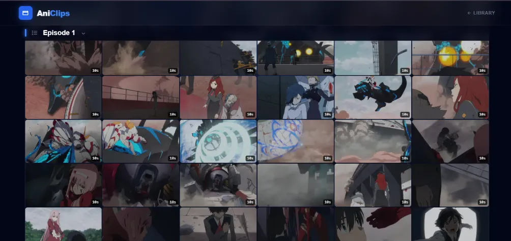
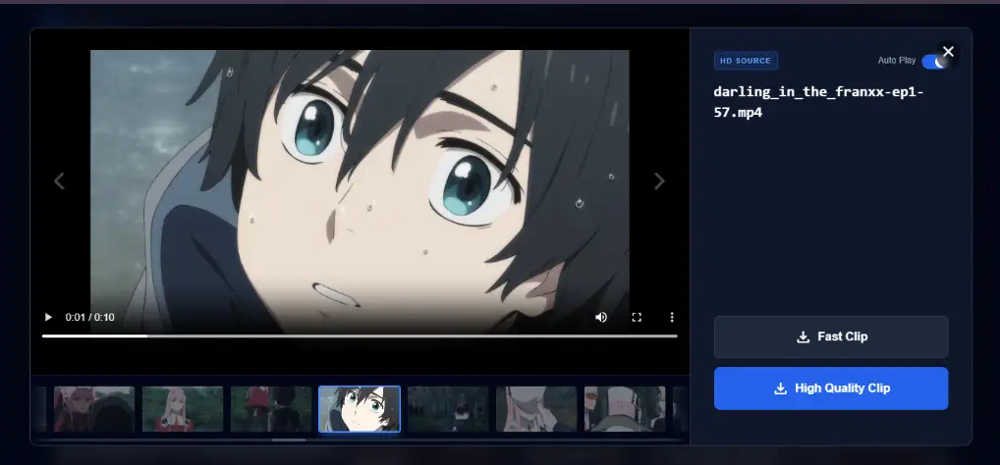
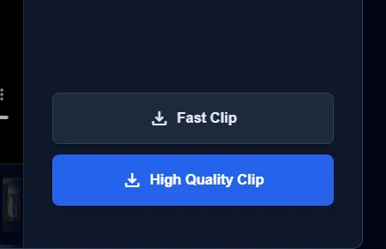

So you've got an edit in mind.
A specific scene. A specific expression. A three-second moment you can already picture on the timeline.
The hard part has never been the editing itself. It's getting the footage — finding the right clip, at the right moment, in a usable quality, without downloading an entire season first.
That's exactly what AniClips is built for. This guide walks through the full workflow, from opening the homepage to dropping your first clip into your editor. Six steps, no guesswork.
You'll need a browser and an editor. That's it.
Choose an anime
Head to the AniClips homepage and find the series you want to edit. You can scroll through the library, or use search if you already know what you're after.
Click the anime to open its page. From there you'll see the available episodes and the clips inside them.

Click any anime to open its episode list.
Browse episode clips
Inside an anime, each episode has its own grid of clips. Scroll through until you spot the scene you're looking for.
Before you open anything, hover over a clip. A quick preview plays right on the card — no new tab, no waiting for a full player to load.
This is where AniClips saves the most time. Instead of opening ten tabs and waiting for ten players, you can scan an entire episode's worth of clips in seconds.

Screenshot 2 — The episode clip grid.
Screenshot 3 — Hover preview, playing right on the card.
Open the clip
Found a promising scene? Click the clip to open its dedicated page.
The preview starts playing immediately, and you get a larger view so you can confirm you've found the exact moment — the right frame, the right expression, the right beat.
Not quite right? Go back and keep browsing. Nothing downloaded, nothing wasted.

Screenshot 4 — The clip page. The preview starts playing right away.
Choose your download quality
Once you're sure, it's time to download. AniClips offers two options: Fast Clip and HQ Clip.
Pick the one that matches what you're actually doing. Not every edit needs the heaviest file, and not every rough cut needs to be pixel-perfect.

Screenshot 5 — Download options, with both choices visible.
Fast Clip or HQ Clip?
Both options give you the same footage. The difference is what you're optimizing for.
Fast Clip
A quicker, more lightweight download for when you want the footage and want to start editing without waiting around. It gives 520p footage with medium bitrate.
Best for
Quick edits, rough cuts, and slower internet connections.
HQ Clip
The higher-quality download for editors who want sharper footage in the final project. It gives 1080p footage with maximum bitrate available.
Best for
Detailed edits, close-ups, color grading, twixtors and projects where image quality matters.
A simple rule of thumb: work with Fast Clip while you're assembling the edit, then pull HQ Clip for the shots that actually make the final cut.
Find your downloaded file
Downloads work exactly like any other file in your browser. Depending on your setup, the clip lands in your default Downloads folder, or your browser asks where to save it.
If you can't find it, open your browser's downloads panel. It lists recent files and can take you straight to the folder they're in.
A little organization goes a long way here. Rename clips as you grab them, or sort them into a project folder, and you'll save yourself a scavenger hunt later.
Import it into your editor
Open your editor and drag the file in, or use its usual import option. CapCut, Premiere Pro, DaVinci Resolve, After Effects, Alight Motion, and most other editors accept the standard clip formats AniClips provides.
From there, it's just editing — trim, layer, color, export.
That's the Whole Workflow
Pick an anime. Browse the clips. Preview before you commit. Choose your quality. Import and edit.
The goal is simple: spend less time hunting for footage and more time actually editing.